Derivation colors · sand terraces · green enclosures · violet transitions · red source features
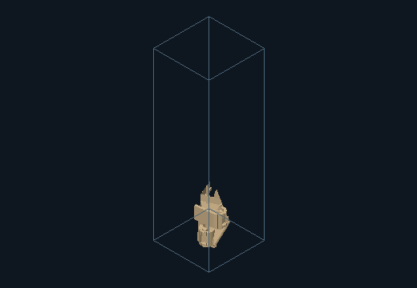
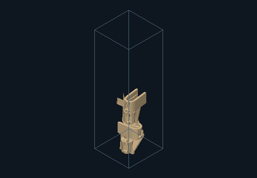
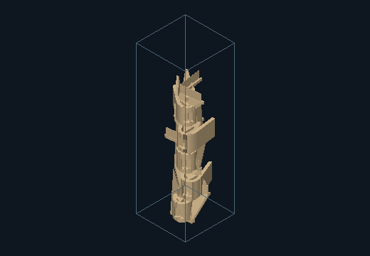
Source features, component provenance and measurements
| Instance | Source / role | Region / elevation | Yaw / tilt |
|---|---|---|---|
| instance-0 | 0 / L | 0 / 1.08 | 0 / 0 |
| instance-1 | 1 / U | 0 / 1.08 | 15 / 0 |
| instance-2 | 2 / V | 0 / 1.08 | 30 / 90 |
| instance-3 | 3 / L | 1 / 6.88 | 45 / 0 |
| instance-4 | 4 / U | 1 / 6.88 | 90 / 0 |
| instance-5 | 5 / V | 1 / 6.88 | 0 / 90 |
| instance-6 | 0 / L | 2 / 12.67 | 15 / 0 |
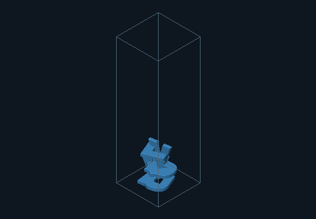
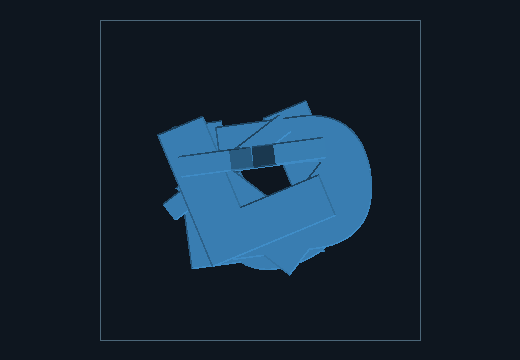
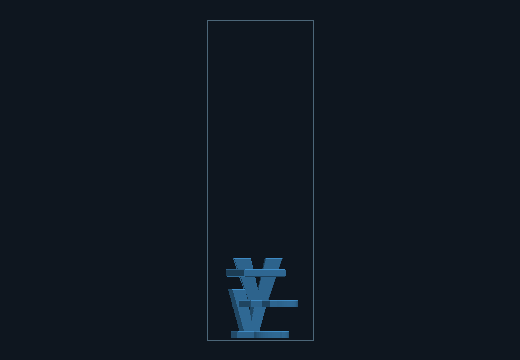
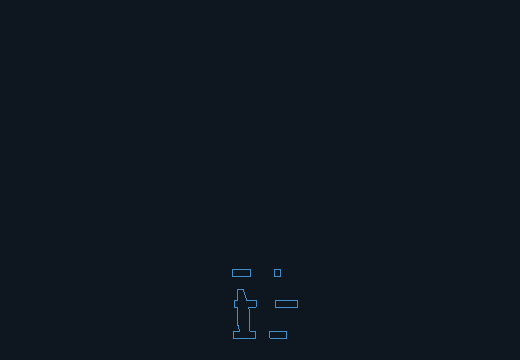
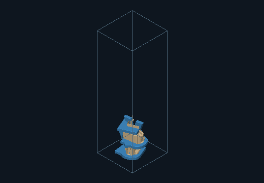
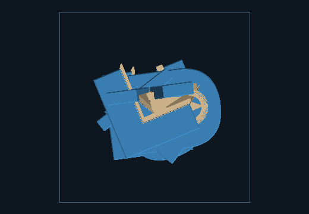
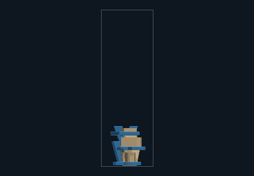
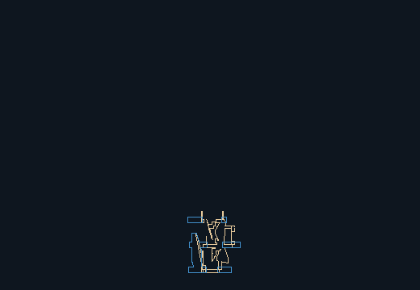
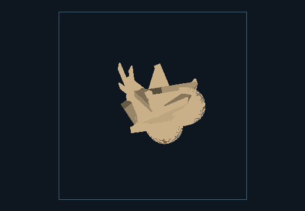
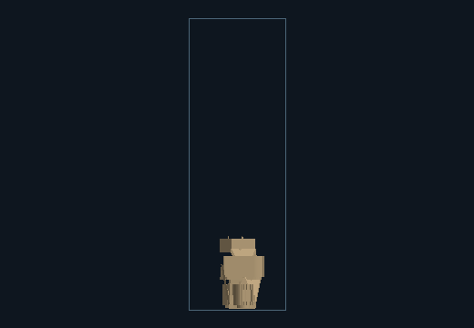
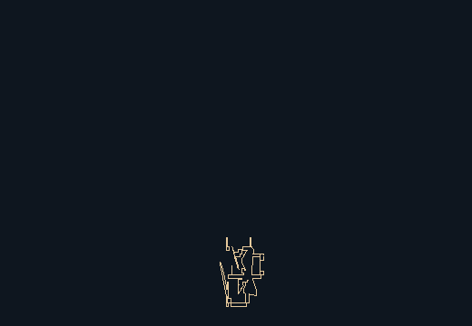
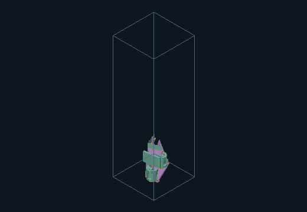
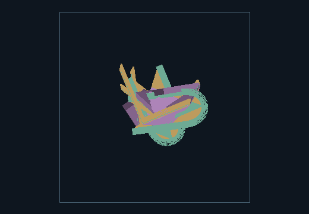
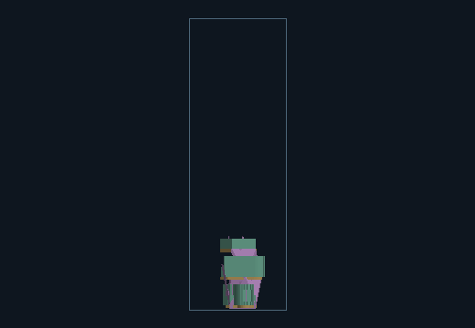
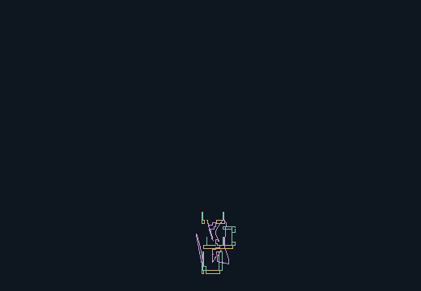
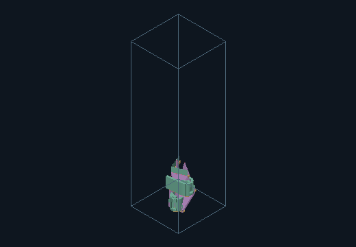
Source features, component provenance and measurements
| Instance | Source / role | Region / elevation | Yaw / tilt |
|---|---|---|---|
| instance-0 | 0 / L | 0 / 1.32 | 0 / 0 |
| instance-1 | 1 / U | 0 / 1.32 | 15 / 0 |
| instance-2 | 2 / V | 0 / 1.32 | 30 / 90 |
| instance-3 | 3 / L | 1 / 8.40 | 45 / 0 |
| instance-4 | 4 / U | 1 / 8.40 | 90 / 0 |
| instance-5 | 5 / V | 1 / 8.40 | 0 / 90 |
| instance-6 | 0 / L | 2 / 15.49 | 15 / 0 |
| instance-7 | 1 / U | 2 / 15.49 | 30 / 0 |
| instance-8 | 2 / V | 2 / 15.49 | 45 / 90 |
| instance-9 | 3 / L | 3 / 22.57 | 90 / 0 |
| instance-10 | 4 / U | 3 / 22.57 | 0 / 0 |
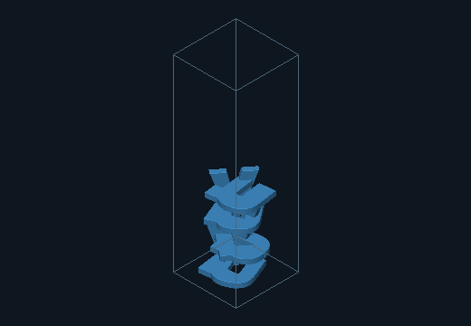
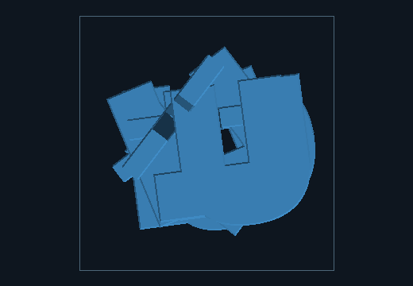
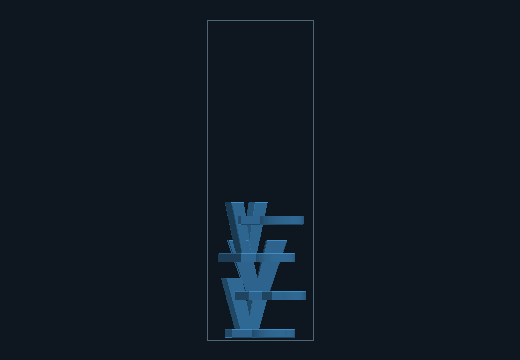
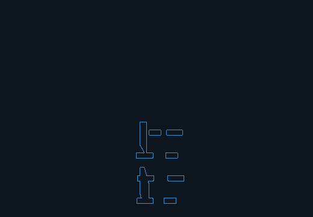
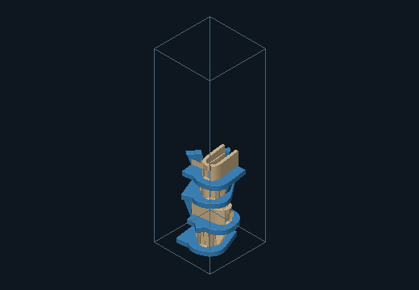
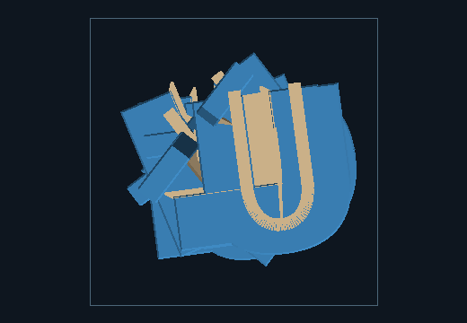
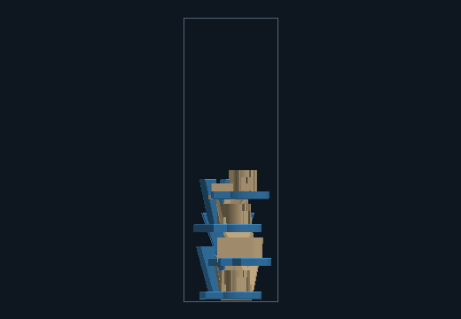
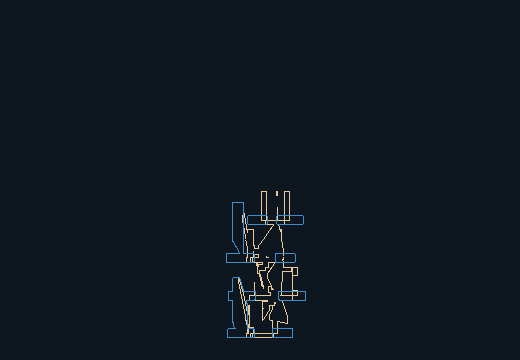
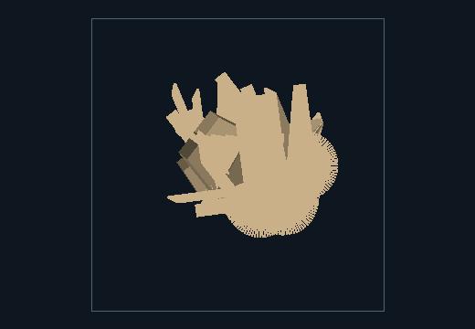
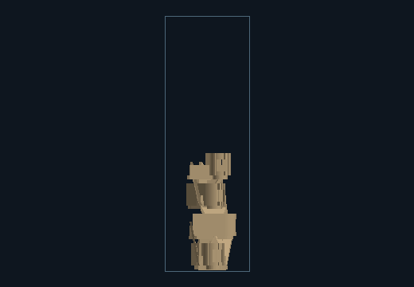
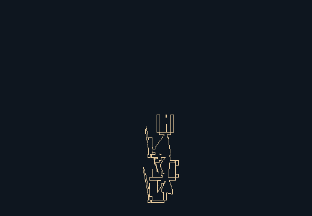
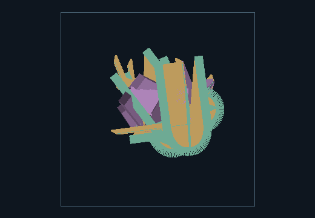
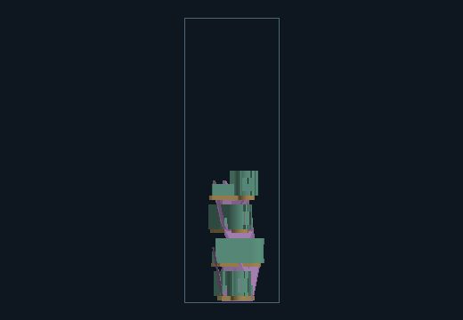
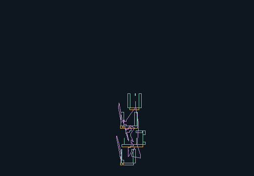
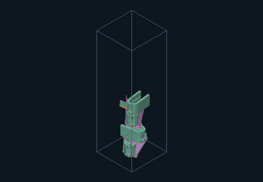
Source features, component provenance and measurements
| Instance | Source / role | Region / elevation | Yaw / tilt |
|---|---|---|---|
| instance-0 | 0 / L | 0 / 1.56 | 0 / 0 |
| instance-1 | 1 / U | 0 / 1.56 | 15 / 0 |
| instance-2 | 2 / V | 0 / 1.56 | 30 / 90 |
| instance-3 | 3 / L | 1 / 9.93 | 30 / 0 |
| instance-4 | 4 / U | 1 / 9.93 | 15 / 0 |
| instance-5 | 5 / V | 1 / 9.93 | 0 / 90 |
| instance-6 | 0 / L | 2 / 18.30 | 15 / 0 |
| instance-7 | 1 / U | 2 / 18.30 | 30 / 0 |
| instance-8 | 2 / V | 2 / 18.30 | 45 / 90 |
| instance-9 | 3 / L | 3 / 26.68 | 90 / 0 |
| instance-10 | 4 / U | 3 / 26.68 | 0 / 0 |
| instance-11 | 5 / V | 3 / 26.68 | 15 / 90 |
| instance-12 | 0 / L | 4 / 35.05 | 30 / 0 |
| instance-13 | 1 / U | 4 / 35.05 | 45 / 0 |
| instance-14 | 2 / V | 4 / 35.05 | 90 / 90 |
| instance-15 | 3 / L | 5 / 43.42 | 0 / 0 |
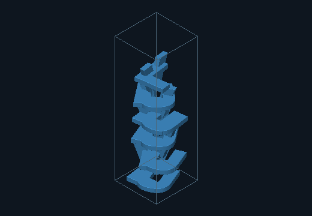
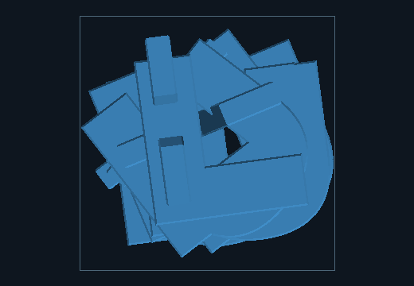
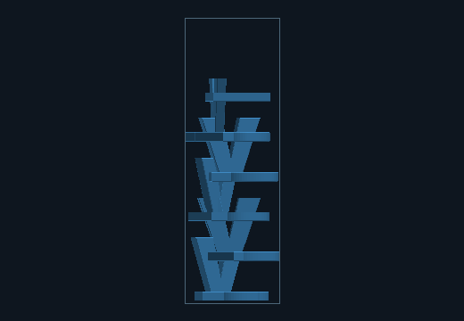
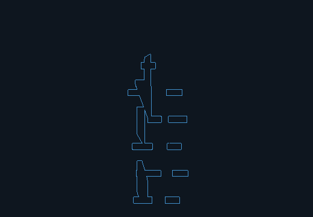
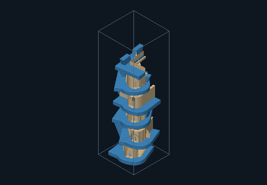
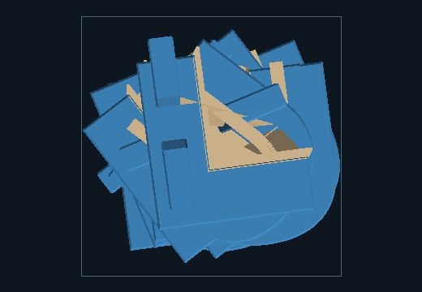
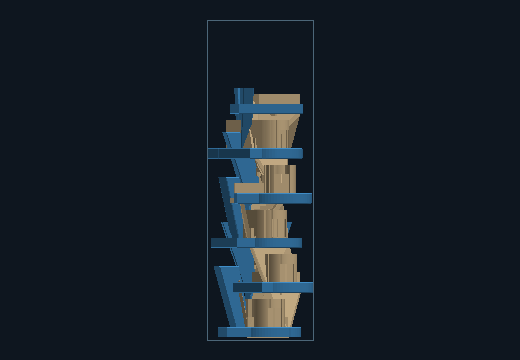
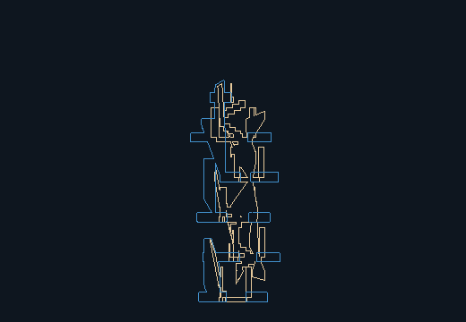
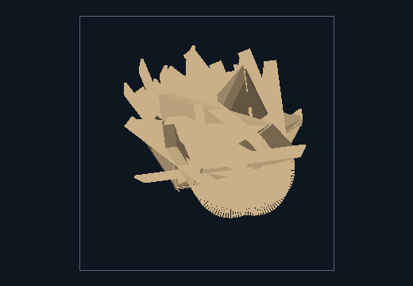
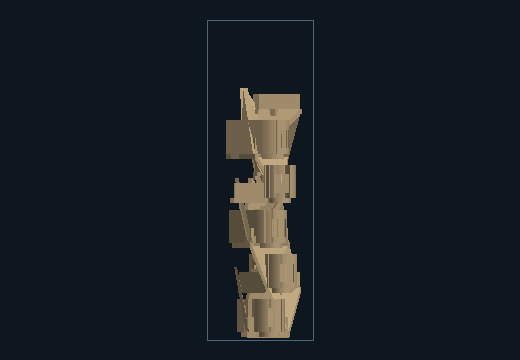
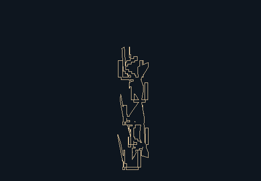
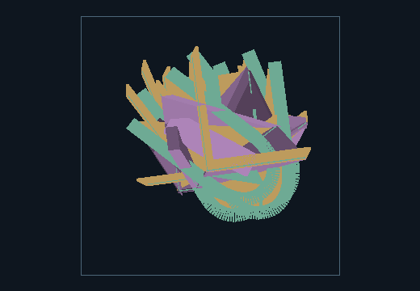
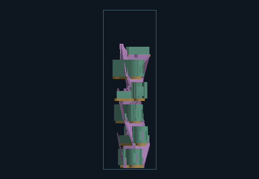
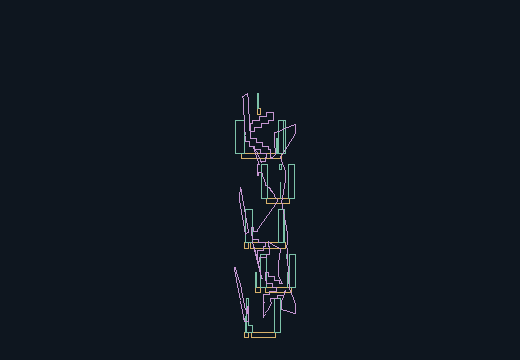
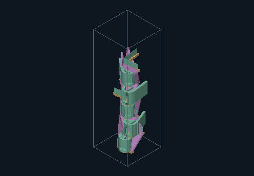